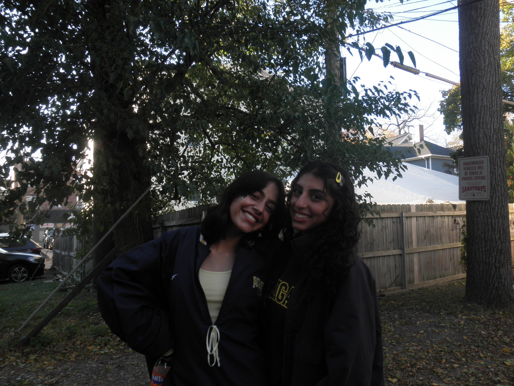
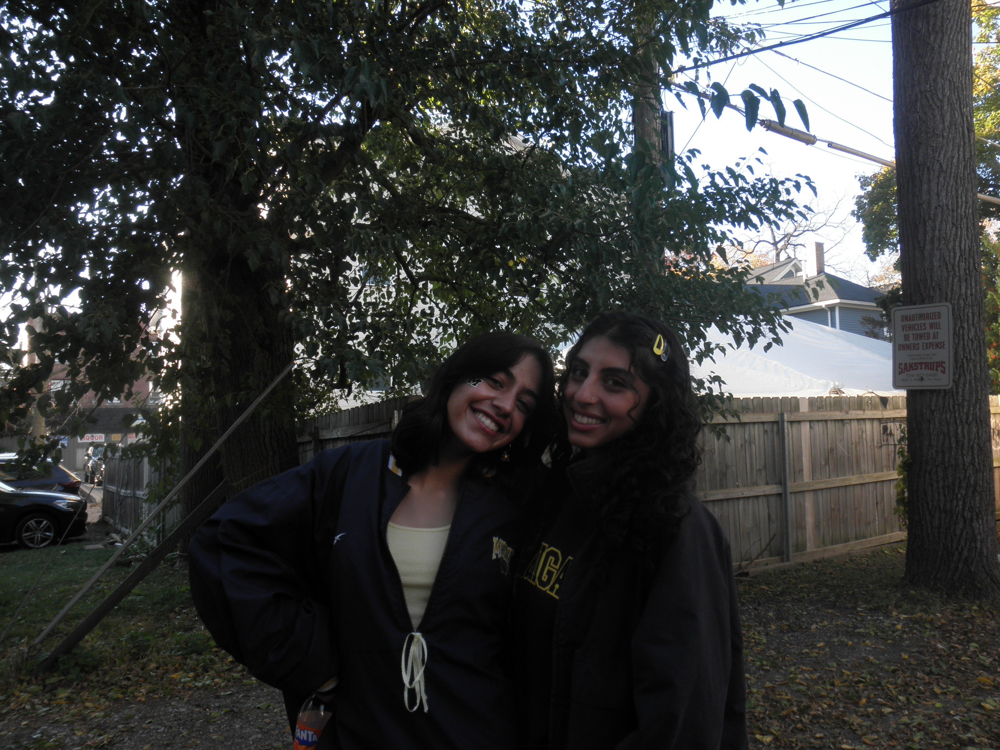

About
I am a passionate designer and developer pursuing a UX/UI degree at the University of Michigan. With a strong foundation in front-end development and a flair for crafting thoughtful digital experiences, I enjoy tackling complex challenges and creating user-centered solutions. As a member of Alpha Theta Delta, a professional design fraternity, I am constantly honing my design skills and exploring new tools and techniques.
Beyond digital design, I channel my creativity in various leadership and artistic roles. As the SAPAC Events Committee Head, I organize and promote impactful events focused on raising awareness and fostering dialogue around important social issues. Additionally, I serve as the set designer for Wolveraas, a traditional Indian dance team specializing in raas and garba. In this role, I merge artistry and engineering to conceptualize and construct large-scale, dynamic props that complement the vibrant choreography and cultural storytelling of our performances.
In my free time, you’ll find me immersed in a good book, experimenting with crafts, or seeking inspiration through creative projects. I’m always eager to explore new ideas and bring them to life through design.